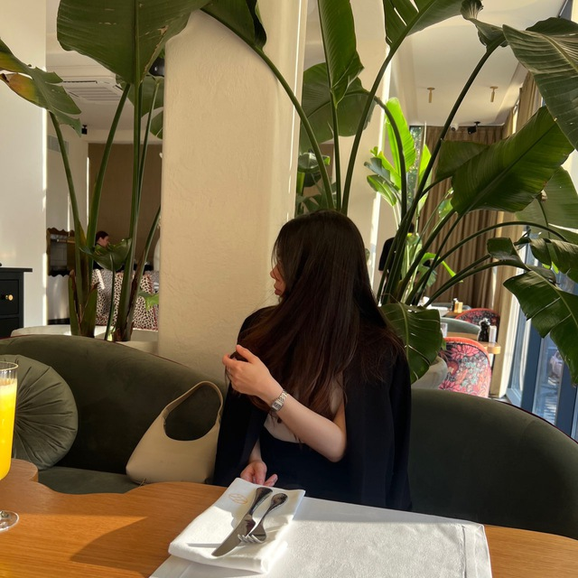

Английские фразы для первой поездки за границу
Аэропорт, отель, кафе и город: что сказать и как это запомнить.
Занятия для путешествий, учёбы и повседневного общения. Программа подбирается под ваш возраст, уровень и цель — в спокойном темпе и с разговорной практикой.

C1уровень английского
Джамиляпреподаватель английского
Взрослым и подросткам нужны разные темы, примеры и темп — поэтому и занятия устроены по-разному.
Для тех, кто начинает с нуля, возвращается к языку после перерыва или хочет наконец заговорить. Учимся для поездок, общения, учёбы или просто для себя.
Для тех, кому хочется понимать английский, а не только выполнять упражнения. Разбираем непонятное и учимся говорить на темы, которые действительно интересны.
Цель определяет, какие слова, ситуации и навыки окажутся в центре занятий. Направления можно сочетать.
Подробнее о направлениях →Аэропорт, отель, кафе, вопросы на улице — чтобы чувствовать себя увереннее в поездке.
Школьная программа, тексты, устные ответы и письменные задания — с пониманием, а не зубрёжкой.
Знакомство, рассказ о себе, переписка, фильмы и музыка без перевода каждого слова.
Своя цель — своя программа: хобби, переезд, общение с близкими или давняя мечта.
Содержание занятий в обоих форматах строится одинаково: от вашей цели и уровня.
Занятия по видеосвязи из дома. Нужны устройство с камерой и микрофоном и стабильный интернет.
Личные встречи. Место: [район или адрес в Махачкале].
Не уверены, что выбрать? Расскажите о своём распорядке при записи — решим вместе.
Пять шагов — от знакомства до регулярной практики.
На первой встрече выясняем, что вы уже знаете и где нужна опора.
Формулируем, зачем вам английский и что хочется уметь в первую очередь.
Подбираем темы, материалы и темп под ваш возраст, уровень и цель.
Говорим, слушаем, читаем и пишем — с упором на то, что пригодится именно вам.
Отмечаем, что уже получается, и разбираем ошибки спокойно и по делу.
Здравствуйте! Меня зовут Джамиля. Я преподаю английский язык женщинам и подросткам — в Махачкале и онлайн.
На занятиях важно, чтобы вам было спокойно: можно задавать любые вопросы, ошибаться и двигаться в своём темпе. Объясняю простым языком и всегда оставляю время на практику.
Подробнее о преподавателе →C1
Мой уровень английского по шкале CEFR — продвинутый
Практичные материалы, которые можно применить уже сегодня.
Аэропорт, отель, кафе и город: что сказать и как это запомнить.
Схема из пяти шагов, готовые примеры и разбор частых ошибок.
Семь способов и план на неделю по десять минут в день.
Да. Программа подбирается под ваш начальный уровень. Если вы никогда не учили английский или всё забыли, начнём с самых основ и будем двигаться в комфортном темпе.
Мы знакомимся, обсуждаем, зачем вам английский, и определяем ваш текущий уровень. Вы пробуете формат занятий и решаете, подходит ли он вам. Условия пробного урока подскажу при записи.
Онлайн удобен, если важно экономить время на дорогу или вы живёте не в Махачкале. Офлайн подойдёт тем, кому легче сосредоточиться при личной встрече. Содержание занятий в обоих форматах строится одинаково — от вашей цели.
Стоимость, продолжительность и расписание зависят от формата. Напишите мне или оставьте заявку — расскажу об актуальных условиях и свободном времени.
Это зависит от вашей цели и графика. Важнее всего регулярность: небольшие, но постоянные шаги дают больше, чем редкие рывки. Удобный ритм обсудим на первой встрече.
Да. Сначала разберёмся, где именно возникают трудности, и вернёмся к темам, которые остались непонятыми. Занятия проходят в спокойной обстановке, без оценок и сравнения с одноклассниками.
У каждого свой темп: он зависит от начального уровня, регулярности занятий и практики между уроками. Обещать точный срок было бы нечестно. Разговорной практике уделяем время с первых занятий — начиная с простых фраз о себе.
Оставьте заявку или напишите напрямую — расскажу об условиях, и подберём удобное время.